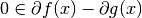
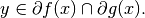
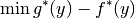
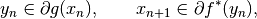
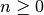

dca¶
-
odl.solvers.nonsmooth.difference_convex.dca(x, f, g, niter, callback=None)[source]¶ Subgradient DCA of Tao and An.
This algorithm solves a problem of the form
min_x f(x) - g(x),
where
fandgare proper, convex and lower semicontinuous functions.- Parameters
- x
LinearSpaceElement Initial point, updated in-place.
- f
Functional Convex functional. Needs to implement
f.convex_conj.gradient.- g
Functional Convex functional. Needs to implement
g.gradient.- niterint
Number of iterations.
- callbackcallable, optional
Function called with the current iterate after each iteration.
- x
See also
prox_dcaSolver with a proximal step for
fand a subgradient step forg.doubleprox_dcSolver with proximal steps for all the nonsmooth convex functionals and a gradient step for a smooth functional.
Notes
The algorithm is described in Section 3 and in particular in Theorem 3 of [TA1997]. The problem

has the first-order optimality condition , i.e., aims at finding an
 so that there exists a
common element
so that there exists a
common element
The element
 can be seen as a solution of the Toland dual problem
can be seen as a solution of the Toland dual problem
and the iteration is given by

for . Here, a subgradient is found by evaluating the gradient method of the respective functionals.
References
[TA1997] Tao, P D, and An, L T H. Convex analysis approach to d.c. programming: Theory, algorithms and applications. Acta Mathematica Vietnamica, 22.1 (1997), pp 289–355.